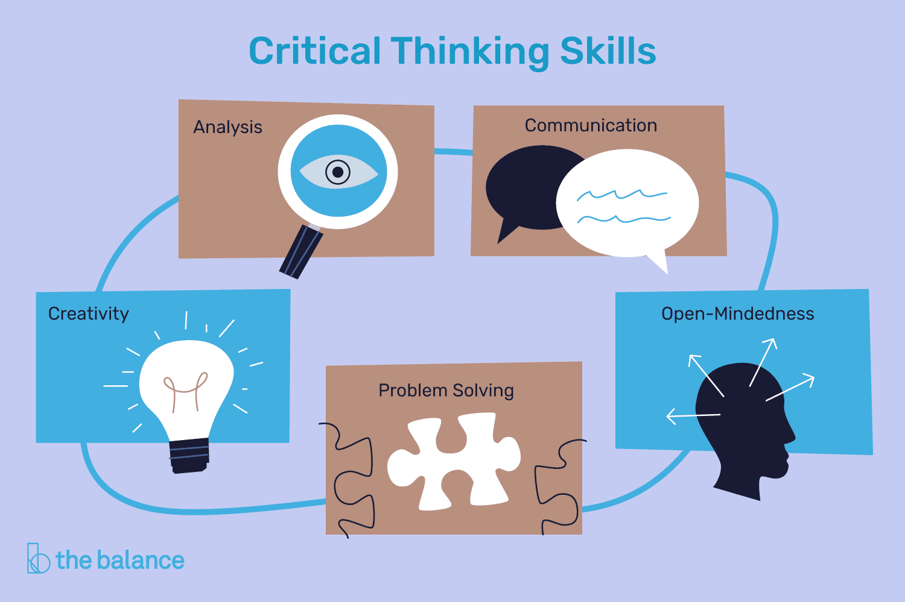

Get StartedIf there was one life skill everyone on the planet needed, it was the ability to think with critical objectivity.
The Skills We Need for Critical Thinking. The skills that we need in order to be able to think critically are varied and include observation, analysis, interpretation, reflection, evaluation, inference, explanation, problem solving, and decision making.
Critical thinking is thinking about things in certain ways so as to arrive at the best possible solution in the circumstances that the thinker is aware of.
Good critical thinkers can draw reasonable conclusions from a set of information and discriminate between useful and less useful details.
Critical thinking involves the evaluation of sources such as data, facts, observable phenomenon, and research findings.